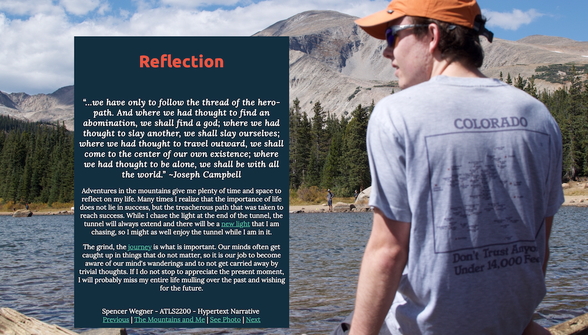

I designed a mobile app prototype in InVision that shares information about Colorado's Fourteeners. I focused on the overuse of Fourteener trails, how to educate the public and keep hikers safe, and how we can preserve our mountains for future generations. I used Adobe Illustrator to design elements and graphics and to create the layout. Many of the graphics came from The Noun Project.
Check out the mobile prototype on InVision.
I designed a website displaying a hypertext narrative describing my relationship with the mountains and outdoor spaces. Large background photos drive the narrative and are accompanied by short excerpts. Check out my hypertext narrative here.
With a partner, I designed a grocery list app prototype that learns from the user's shopping habits. The project taught me the user centered design process from design research to paper prototypes to usability testing. You can check out the project website here.
In my typography course, I designed a poster to advertise the Colorado Symphony Orchestra's Classics Series. I used Adobe Illustrator to create the poster and to arrange the informative text. Click on the image to see an enlarged version.